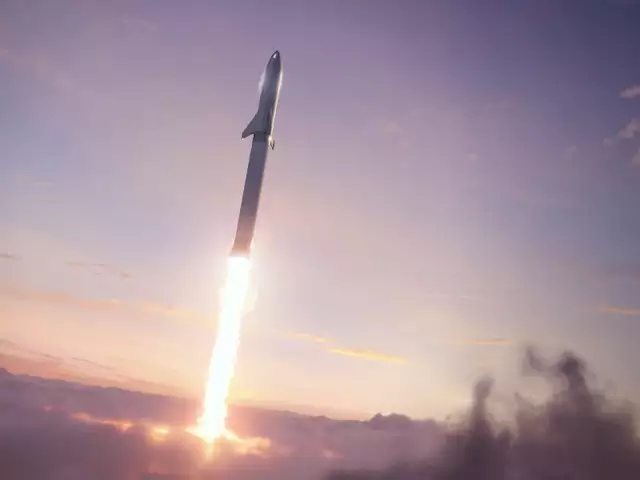
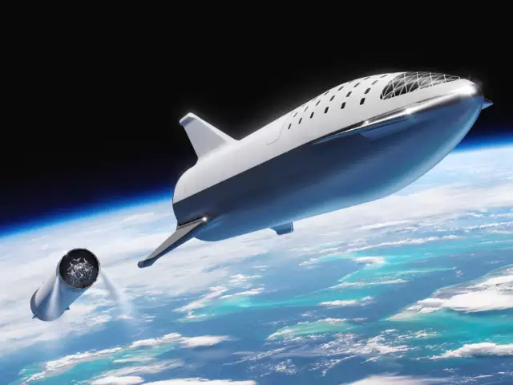
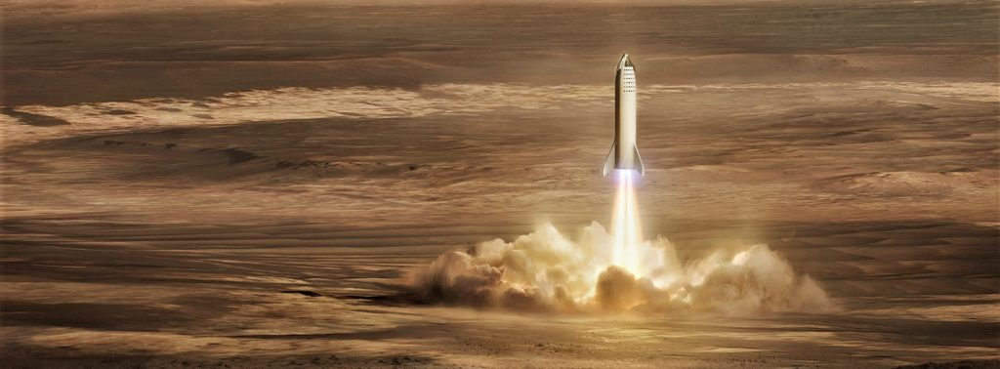
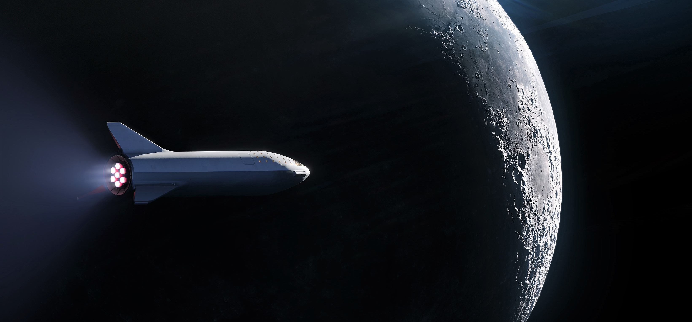
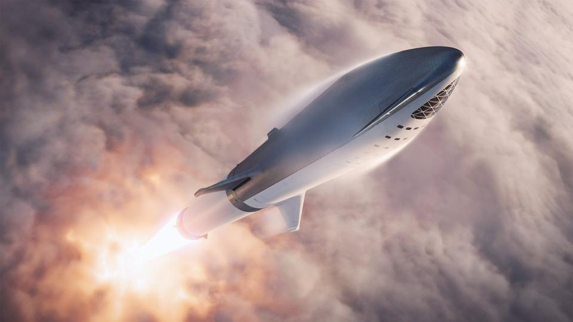
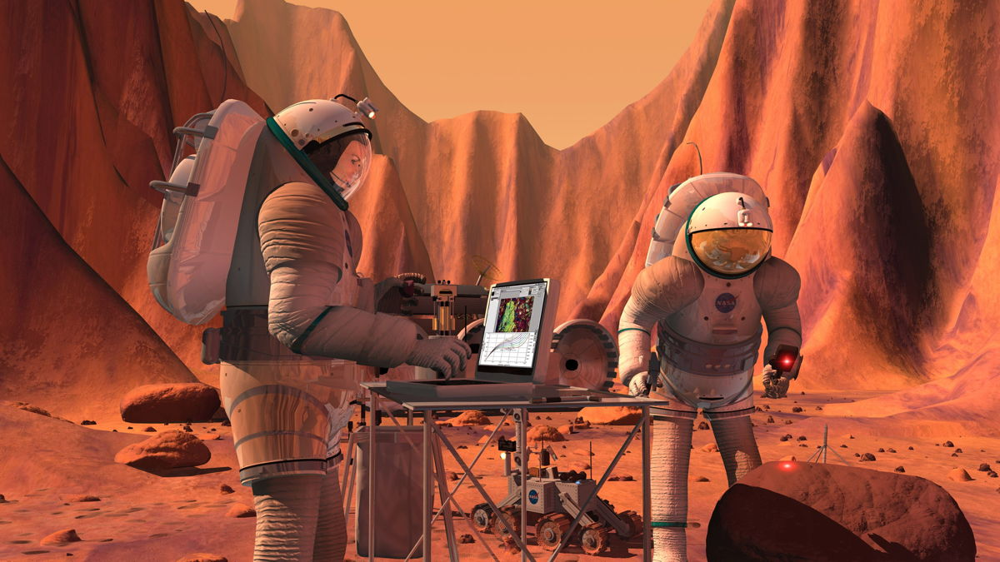
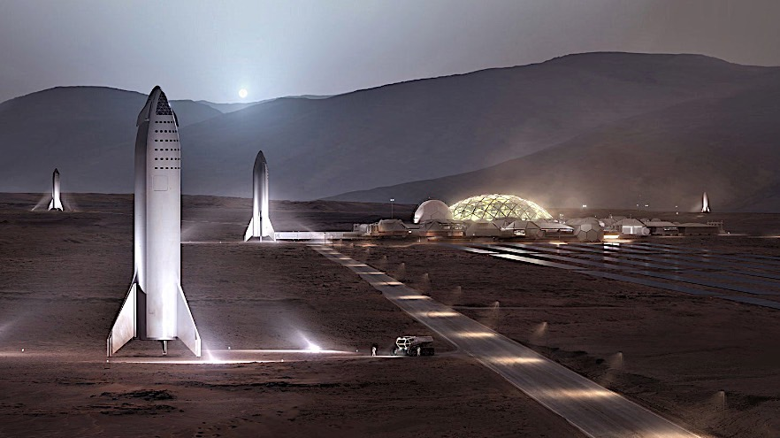
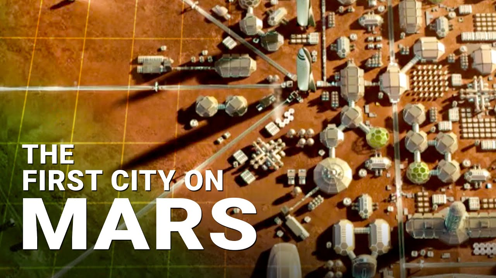
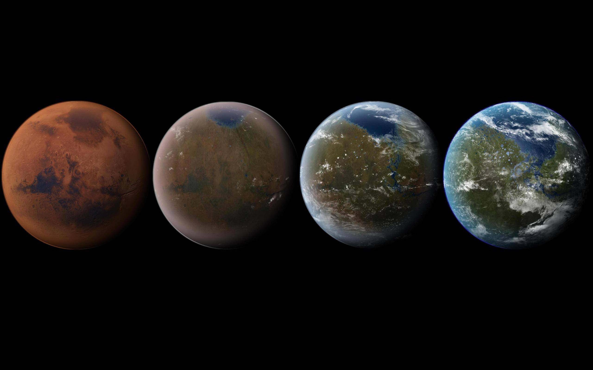

Elon Musk
The man who behind SpaceX, Tesla, SolarCity, OpenAI, and
TheBoring Company.
Some people don't like change, but you need to embrace change if the alternative is a disaster.
Elon Musk's life Timeline
- June 28, 1971 : Born in South Africa
- Age 12 : Creates and writes a video game called Blastar, sells it for the equivalent of $500
- 1988 : Graduates from Pretoria Boys High School with distinctions in science and computer studies
- 1989 to 1991 : Attends college at Queen's University in Kingston, Ontario. Then transfers to the University of Pennsylvania, completed a BS in Economics (Wharton) and a BA with a major in physics
- 1995 : Moves to Silicon Valley; defers graduate program in applied physics and materials science at Stanford University to join the Internet boom
- February 1999 : Sells Zip2 to Compaq, the personal computer company, for $307 million, of which $22 million went to Musk. Then forms X.com, which in 2000 morphs into PayPal
- July 2002 : eBay acquires PayPal for $1.5 billion in stock,of which $165 million goes to Musk
- 2002 : Becomes an American citizen
- 2002 : Founds SpaceX
- 2004 : Invests in Tesla Motors
- October 2008 : Becomes Tesla’s CEO
- Jun 29, 2010 : Tesla IPO
- May 2012 : SpaceX becomes the first commercial vehicle to deliver a load of supplies to the International Space Station.
- June 2012 : Tesla begins deliveries of the all-electric Model S
- 2013 : SolarCity became the second largest solar power provider
- August 2013 : Releases sketch and concept of the Hyperloop
- 2014 : Announced Open-Sourcing Tesla Technology
- June 2014 : Committed to building a SolarCity advanced production facility in Buffalo
- January 2015 : Donated US$10 million to the Future of Life Institute
- June 2015 : Announced Hyperloop design competition
- December 2015 : Announced creation of OpenAI, an Artificial Intelligence company
- September 2016 : Revealed Mars colonization exploration architecture details
- May 12, 2017 : Hyperloop One announced first successful test run
- July 2017 : Purchased x.com domain from PayPal
- 2018 : Left the OpenAI board
- May 7, 2018 : Musk and Grimes announced that they were dating
- July 2018 : Attempted to provide assistance to rescuers during the Tham Luang cave rescue
- September 2018 : Warned about the dangers of AI
- October 2018 : Donated over $480,000 to install new water fountains at all Flint, Michigan schools.
- October 2018 : Filed an 'intent to use' trademark application for Teslaquila
- January 2019 : Traveled to China for the groundbreaking of Tesla's Shanghai Gigafactory
- November 2020 : Elon Musk has topped Microsoft founder Bill Gates to become the world's second richest person.
Some Future Timelines
- 2020-2021 : Try to launch a full BFR, and get a spaceship into orbit.
- 
- 2022 : Launch two missions to Mars full of cargo and supplies (but no people).
- 
- 2022-2023 : Land the first Big Falcon Spaceship on Mars.
- 
- 2023 : Launch the first people with BFR and send them around the moon.
- 
- 2024 : Blast people on the first human voyage to Mars.
- 
- 2025 : Put boots on Mars.
- 
- 2028 : Finish building Mars Base Alpha.
- 
- Perhaps the 2030s : Construction of the first city on Mars.
- 
- 2100s onward : Terraform Mars into an Earth-like planet.